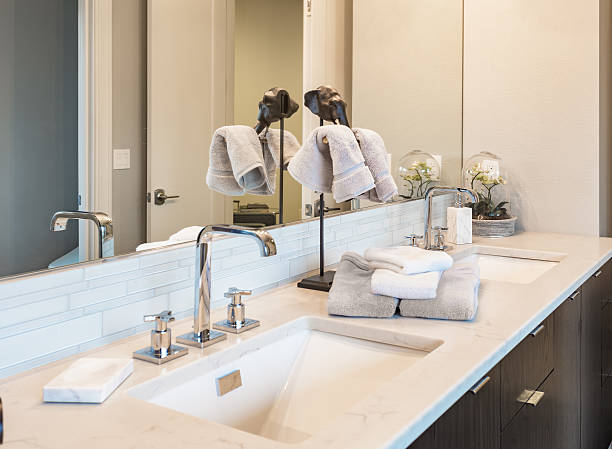

Wentzville Missouri
info@innovativeremodelingkb.pro
Wentzville Missouri
info@innovativeremodelingkb.pro

Reimagine your space with top-rated bathroom and kitchen remodeling services in Wentzville Missouri . From sleek designs to practical layouts, we bring your vision to life with expertise and precision.
Click Here To Call Us (877) 848-1711Looking to enhance the functionality and style of your home in Wentzville Missouri ? Our professional bathroom and kitchen remodeling services are designed to turn your dream space into a reality. With years of experience and a dedication to exceptional craftsmanship, we specialize in creating personalized spaces that combine elegance, comfort, and practicality.
In the kitchen, we offer custom cabinetry, modern countertops, energy-efficient appliances, and innovative layouts to maximize storage and usability. Our expert designers ensure every detail aligns with your vision, creating a space where cooking, dining, and entertaining become a joy. Whether you want a sleek, modern kitchen or a cozy, traditional aesthetic, we’ve got you covered.
For your bathroom, we provide complete renovations, including luxurious tubs, walk-in showers, and vanity upgrades tailored to your needs. Our focus is on blending style with convenience, delivering spa-like retreats that add value and comfort to your home. From elegant tiles to state-of-the-art fixtures, we’ll elevate your bathroom to a new level of sophistication.
Choose us for unmatched quality, transparent pricing, and timely project completion. Contact us today to discuss your remodeling project in Wentzville Missouri and discover why homeowners trust us to bring their remodeling visions to life. Let us redefine your spaces and enhance your home’s beauty and functionality.
Residential & commercial Bathroom and Kitchen Remodeling
Quality services at affordable prices
Immediate 24/ 7 emergency services


Why Choose Us for Your Wentzville Missouri Bathroom and Kitchen Renovations?
When it comes to bathroom and kitchen renovations in Wentzville Missouri we are your trusted partner for transforming your home into a beautiful, functional space. Here’s why homeowners across Wentzville Missouri choose us for their renovation needs:
Expert Craftsmanship
Our team of skilled designers and contractors specializes in delivering top-quality bathroom and kitchen renovations. We take pride in our attention to detail, ensuring every project is completed with precision and care. Whether you’re looking to update your kitchen with modern appliances or transform your bathroom into a luxurious retreat, we have the expertise to bring your vision to life.
Customized Solutions
We understand that every home is unique. That's why we offer personalized design solutions tailored to fit your style, preferences, and budget. From contemporary to traditional designs, our team works closely with you to create a renovation that complements your lifestyle.
Timely and Affordable
At Bathroom and Kitchen Remodeling, we prioritize efficiency and cost-effectiveness. Our team works diligently to complete projects on time, without compromising on quality. We believe in transparent pricing and provide you with a detailed estimate before starting any work, so you know exactly what to expect.
Client Satisfaction Guarantee
Our commitment to customer satisfaction is at the core of everything we do. We listen to your needs and strive to exceed your expectations, ensuring you’re completely happy with the results. With our proven track record of successful bathroom and kitchen renovations across Wentzville Missouri you can trust us to enhance the beauty and functionality of your home.
Ready to start your bathroom and kitchen transformation in Wentzville Missouri ? Contact us today for a free consultation!
Residential & commercial Bathroom and Kitchen Remodeling
Quality services at affordable prices
Immediate 24/ 7 emergency services
A beautiful countertop can be the focal point of your kitchen, adding both aesthetics and functionality. Our countertop upgrades at Bathroom and Kitchen Remodeling offer a vast selection of premium materials like granite, quartz, and marble, allowing you to create the perfect look for your space. We understand that durability and maintenance are essential when selecting a countertop, and we guide you in choosing the right fit for your lifestyle. Our skilled craftsmen ensure expert installation that adheres to the highest standards, making your kitchen not only beautiful but also a practical workspace. With years of experience serving Wentzville Missouri we take pride in our unmatched quality and commitment to customer satisfaction. Why choose us? We provide personalized service, expert guidance, and quality workmanship that will enhance your kitchen for years to come.

If you are passionate about sustainability, our eco-friendly kitchen remodeling services in Wentzville Missouri are perfect for you. We understand the importance of creating a sustainable kitchen that’s energy-efficient and environmentally responsible. Our team can guide you in selecting eco-friendly materials, energy-efficient appliances, and sustainable design practices. By choosing green alternatives, you can reduce your ecological footprint while creating a beautiful kitchen that prioritizes cleanliness and efficiency. Trust us for environmentally conscious kitchen remodeling that does not sacrifice style for sustainability.

A stunning backsplash can elevate your kitchen’s aesthetic while protecting walls from spills and splashes. We offer professional backsplash installation and upgrades that allow your kitchen to shine. You can choose from a multitude of styles, colors, and materials—whether traditional tile, sleek glass, or contemporary metal. Our dedicated team ensures a flawless installation that complements your kitchen design. Trust us to add that perfect finishing touch with a backsplash that creates visual interest and enhances the overall functionality of your kitchen.

Upgrading your kitchen appliances can significantly enhance functionality and efficiency. Our kitchen appliance upgrades include helping you select and integrate the latest technology, ensuring that everything from ovens to refrigerators operates seamlessly. Our team offers a comprehensive assessment of your current appliances to recommend efficient and stylish upgrades that fit your culinary needs. We understand that modern kitchens require integration of high-end appliances that blend well with cabinetry and space. With us, your upgraded kitchen will not only be stylish but also equipped with appliances that make cooking effortless.

Embrace the charm of country living with our stunning farmhouse kitchen designs at Bathroom and Kitchen Remodeling. Our team specializes in creating warm and inviting spaces that blend rustic charm with modern convenience. From shiplap walls and vintage accents to spacious islands and handcrafted cabinetry, we ensure that your farmhouse kitchen reflects your personality and lifestyle. Our designers take the time to understand your vision, carefully crafting a space that brings the best of farmhouse aesthetics into your home. With our vast experience transforming kitchens we are known for our outstanding quality and commitment to customer satisfaction. Why choose us? Our passion for design and attention to detail ensure that your farmhouse kitchen is both functional and stylish, creating a cozy heart for your home.
Modern minimalism focuses on simplicity, function, and clean lines. Our modern minimalist kitchen designs in Wentzville Missouri will strip away the unnecessary while maximizing aesthetic appeal. Our team emphasizes sleek cabinetry, integrated appliances, and restrained color palettes to create spaces that are both beautiful and practical. Minimalist design requires careful attention to detail, and our experienced team is adept at executing this style flawlessly. Choose us for your minimalistic kitchen renovation and experience a beautifully curated space that embodies modern elegance and functionality.

Step into the future with our smart kitchen technology integration services. At Bathroom and Kitchen Remodeling, we believe that a modern kitchen should be equipped with the latest technology for enhanced convenience and efficiency. Our team specializes in integrating smart appliances, controlled lighting, and innovative features that simplify your cooking and entertaining. Whether it’s a voice-activated assistant or a smart refrigerator, our designs ensure your kitchen is innovative and user-friendly. Embrace the benefits of a smart kitchen that enhances your lifestyle with our expert integration solutions.

Transform your backyard into a culinary paradise with our outdoor kitchen construction services. Outdoor kitchens extend your living space and allow you to enjoy cooking and dining al fresco. We specialize in designing outdoor kitchens that integrate cooking stations, prep areas, and entertainment spaces, all constructed with weather-resistant materials tailored for outdoor functionality. Our skilled team will partner with you to ensure your outdoor kitchen meets your needs and complements your home’s architecture. Choose us for outdoor kitchen construction and enjoy the freedom of cooking amidst nature.

Ambient lighting plays a crucial role in kitchen design. Our lighting and electrical upgrades for kitchens focus on providing effective illumination while enhancing the overall aesthetic of your space. We offer solutions including under-cabinet lighting, pendant fixtures, and integrated LED options that add both beauty and functionality. Our professionals ensure that all electrical work adheres to safety standards while delivering the perfect balance of efficiency and style. For a bright, inviting kitchen environment, choose us for your lighting and electrical upgrades.
Years Experience
Expert Technicians
Satisfied Clients
Compleate Projects
At Innovative Remodeling KB, we are passionate about transforming your home into a stunning space that combines style, function, and comfort. Serving Wentzville Missouri we specialize in bathroom and kitchen remodeling, and our commitment to quality craftsmanship and exceptional customer service sets us apart. Whether you’re envisioning a modern kitchen upgrade or a luxurious bathroom renovation, we’re here to bring your ideas to life.
What makes us the top choice for homeowners in Wentzville Missouri is our attention to detail and dedication to client satisfaction. Our experienced team works closely with you to understand your vision and provide personalized solutions that fit your budget and lifestyle. From design to execution, we ensure that every project is handled with precision and care. We use only the highest quality materials to ensure long-lasting results that enhance your home’s beauty and value.
Innovative Remodeling KB is known for delivering timely, hassle-free remodeling experiences, offering transparent communication throughout the process. Our professionals are skilled in the latest trends and techniques, ensuring your remodel is both modern and timeless. With years of expertise and a portfolio of successful projects across Wentzville Missouri we’ve built a reputation for excellence that our clients can trust.
Choose Innovative Remodeling KB for your next bathroom or kitchen remodel, and experience unparalleled craftsmanship and outstanding results. Let us turn your home improvement dreams into reality!
In today's world, ensuring your bathroom acts as a serene oasis is paramount. Luxury bathroom remodeling elevates your home not just in aesthetics but in functionality and comfort. Our team specializes in creating exquisite environments that blend modern design with timeless elegance. From high-end fixtures and custom cabinetry to unique tile patterns and chic lighting, we provide a curated remodeling experience that caters to your personal tastes while elevating your property's value. With meticulous attention to detail and a commitment to quality, you can trust us to transform your vision into a reality. Choose us to experience unparalleled craftsmanship and a design process tailored just for you.
Is your small bathroom begging for a makeover? Our small bathroom renovations are perfect for maximizing space without sacrificing style. We understand the unique challenges small bathrooms present; therefore, our team specializes in innovative design solutions that can make your bathroom feel more spacious and functional. We employ techniques like wall-mounted fixtures, clever storage solutions, and light color palettes to give the illusion of a larger area. Our skilled designers in Wentzville Missouri work closely with you to enhance your space by leveraging modern tiles, efficient lighting, and a cohesive aesthetic that marries functionality and visual appeal. Transform your bathroom with our small renovations and enjoy a charming yet efficient space tailored just for you.
Experience the ultimate in bathroom luxury with our walk-in shower installations. These modern features not only enhance your daily bathing routine but also add a significant wow factor to your bathroom. Our skilled team will work with you to design a shower that fits your space perfectly, from seamless glass enclosures to exquisite tile choices. We prioritize accessibility, making your shower experience effortless. Choose us for your walk-in shower installation, and you’ll benefit from our commitment to quality and customer service, ensuring every detail is just right, down to faucets and shower heads that elevate your bathing experience.
Say goodbye to the cumbersome bathtub and embrace the modern convenience of a shower with our bathtub-to-shower conversions. These transformations are perfect for homeowners looking to optimize their bathroom space or those preferring the accessibility and quickness of a shower. At Bathroom and Kitchen Remodeling, we understand the nuances of such renovations, providing seamless transitions that perfectly fit your existing layout and style. Our skilled team will work with you to select the right fixtures and design options that enhance your bathroom's aesthetic while maximizing usability. With an extensive portfolio of successful projects we take pride in our bespoke services tailored to fit each client's needs. Why should you choose us? Our commitment to quality craftsmanship, attention to detail, and customer satisfaction ensures that your conversion is not only beautiful but also functional.
The vanity is often the centerpiece of a bathroom. Our custom vanity installations allow you to express your style while providing essential storage and functionality. We work with you to design a vanity that meets your needs, whether you prefer sleek modern lines or charming farmhouse aesthetics. Our attention to detail sets us apart; we ensure that your custom vanity integrates seamlessly with the overall design of your bathroom. From selection of materials to installation, our experienced team maintains the highest standards, ensuring you receive a product that is both beautiful and enduring.
Your master bathroom should be a luxurious retreat from the daily grind. With our master bathroom remodeling services, you can create a spa-like atmosphere tailored to your preferences. We manage everything from layout redesign to material selection, crafting a space that meets all your desires. Imagine relaxing in an oversized soaking tub, enjoying a rainfall shower, or opening your cabinets to find perfectly organized products. With our expertise and commitment to excellence, we’ll guide you every step of the way, ensuring that the result is not only stunning but also a perfect fit for your lifestyle.
A powder room renovation is a chance to showcase your style in a small, yet impactful space. At Bathroom and Kitchen Remodeling, we believe that even the most modest areas have the potential to leave a lasting impression. Our experts specialize in creating stunning powder rooms that combine elegance and functionality, maximizing the limited space without compromising on style. From custom sinks and beautiful wall treatments to innovative lighting solutions, we ensure that your powder room becomes an inviting and stylish representation of your taste. Our collaborative approach allows you to express your vision while benefiting from our design knowledge and craftsmanship. With numerous successful renovations in Wentzville Missouri we are well-equipped to transform your powder room into a standout feature of your home. Why choose us? Our dedication to quality, personalized service, and innovative design solutions make us the top choice for powder room renovations.
One of the most transformative features of any bathroom is the flooring and tiles. At Bathroom and Kitchen Remodeling, we offer comprehensive bathroom tile and flooring upgrades that not only beautify your space but also enhance durability and performance. Choose from a variety of materials, including classic ceramics, luxurious natural stone, and trendy mosaics, all tailored to match your style. Our experienced team in Wentzville Missouri ensures meticulous installation that adheres to industry standards, promising longevity and a flawless appearance. Elevate your bathroom's aesthetic appeal and functionality with our expertly curated tile and flooring options.
Sustainability is key in today’s home design, and our eco-friendly bathroom remodeling service is dedicated to creating beautiful spaces that are kind to the planet. We use sustainable materials, energy-efficient fixtures, and water-saving technologies, resulting in a bathroom that is not only luxurious but also environmentally responsible. Our team stays current with eco-friendly trends and practices, ensuring your bathroom reflects a commitment to sustainability without sacrificing aesthetics or comfort. Working with us means you can renovate your space while making a positive impact on the environment.
Safety and accessibility are paramount, especially in the bathroom, which can be tricky for individuals with mobility challenges. Our accessible bathroom designs prioritize usability while ensuring style and comfort. At Bathroom and Kitchen Remodeling, we specialize in creating ADA-compliant bathrooms tailored to meet the needs of all users. We understand the importance of incorporating elements such as grab bars, walk-in showers, and non-slip flooring to create a safe environment. Our skilled team works closely with you to plan and execute thoughtful designs that enhance accessibility and aesthetic appeal. With extensive experience we take pride in our attention to detail and dedication to high-quality installations. Choose us for our empathetic approach to design, commitment to functionality, and personalized service that ensures your complete satisfaction.
Imagine walking into your bathroom and feeling as though you’ve entered a tranquil spa. Our spa-style bathroom transformations create relaxing environments equipped with features that promote peace and relaxation—think luxurious soaking tubs, soothing lighting, and natural materials. We focus on creating spaces tailored to your idea of serenity, whether that means a minimalist design or a lush, earthy feel. Our expert team collaborates with you from concept to completion, ensuring every aspect is perfect. Choose us for your spa-style transformation and make everyday moments feel like a getaway.
Proper lighting is crucial in any bathroom remodel, significantly impacting both functionality and aesthetic appeal. At Bathroom and Kitchen Remodeling, we specialize in strategic bathroom lighting upgrades that enhance the beauty of your space. Our experienced professionals understand the different layers of lighting needed, from task lighting around mirrors to ambient light creating a warm ambiance. We'll guide you in selecting modern fixtures, energy-efficient LED options, and creative solutions that illuminate your bathroom beautifully. Upgrade your lighting with us, and see how it transforms your bathroom into a welcoming environment.
Transform your storage solutions with our custom bathroom cabinetry services in Wentzville Missouri . We understand that every bathroom requires unique storage options that marry functionality with design. Our custom cabinetry is tailored to your specific needs and space, allowing for an organized and attractive environment. With a variety of finishes and styles, we can create cabinetry that complements your bathroom aesthetic. Our expert craftsmen ensure the highest quality construction, guaranteeing that your new cabinets are practical and durable. Choose us to revolutionize your storage with beautifully designed custom cabinetry.
Upgrading your bathroom plumbing is essential for enhancing both functionality and efficiency. At Bathroom and Kitchen Remodeling, we offer expert plumbing upgrades that ensure your systems are modern, efficient, and up to code. Our team works diligently to design systems that improve water flow, reduce waste, and enhance comfort. Whether you're considering a full plumbing overhaul or targeted updates, we have the expertise to handle projects of any size. Our commitment to using high-quality materials and innovative solutions guarantees lasting results. With vast experience serving the Wentzville Missouri area, we pride ourselves on exceptional service and meticulous attention to detail. Why choose us? We prioritize your satisfaction and safety, providing reliable plumbing upgrades that enhance your bathroom's performance.
A beautifully designed shower enclosure can elevate your bathroom's style while improving functionality. At Bathroom and Kitchen Remodeling, we specialize in stylish and durable shower enclosure installations that cater to various design preferences. Whether you prefer a sleek frameless glass enclosure or a traditional framed design, our experienced team works with you to determine the best solution for your space. We use premium materials and cutting-edge techniques to ensure your installation is flawless and built to last. Our dedication to craftsmanship and customer service has made us a trusted name bathroom renovations. Why choose us? We are committed to turning your vision into reality while providing professional and timely service to ensure your complete satisfaction.
The kitchen is often the heart of the home—a gathering place for family and friends. Our custom kitchen remodeling services help you create the ultimate space tailored to your lifestyle. At Bathroom and Kitchen Remodeling, we specialize in transforming kitchens into functional, stylish, and welcoming environments. From layout optimization and custom cabinetry to stunning countertops and backsplashes, our expert designers will guide you through every decision. We take the time to understand your needs and preferences, ensuring that the final product reflects your taste and enhances your daily life. With extensive experience we have built a reputation for quality, attention to detail, and customer satisfaction. Choose us for our innovative designs, reliable service, and commitment to turning your culinary dreams into reality.
Elevate your culinary space with our luxury kitchen renovations. We bring sophistication and elegance to life with top-of-the-line appliances, premium materials, and innovative designs. Our personalized approach ensures that we listen to your desires and create a kitchen that meets both your aesthetic and functional needs. Imagine high-end finishes, expansive countertops, and smart storage solutions that make cooking easier and more enjoyable. Choose us for your luxury kitchen renovation, and experience craftsmanship that enhances your lifestyle while adding significant value to your home.
Even a small kitchen can shine with the right makeover. Our small kitchen makeovers at Bathroom and Kitchen Remodeling are designed to optimize every square foot of your space, ensuring you have a stylish, functional kitchen despite size limitations. Our team specializes in clever storage solutions, space-saving appliances, and vibrant designs that can refresh the look of your cooking area. We believe that small spaces deserve grand designs, and we work meticulously to deliver a kitchen that suits your lifestyle without compromising on style or function. Let us revamp your small kitchen into a modern masterpiece.
The open concept kitchen has become a popular choice for modern homes, promoting a flow of space that encourages interaction and connectivity. Our team specializes in crafting open concept kitchen designs that enhance your home’s functionality without sacrificing aesthetics. We focus on integrating your kitchen with adjacent living areas, ensuring a harmonious flow that fits your lifestyle. With our attention to detail and understanding of design principles, we’ll create a seamless space that invites family and friends to gather. Choose us for your open concept kitchen design, and let us redefine your home’s heart.
A kitchen island is more than just a functional piece; it's a centerpiece that enhances the style and usability of your kitchen. At Bathroom and Kitchen Remodeling, we provide stunning kitchen island installations that are tailored to fit your needs. Whether you require additional storage, seating, or preparation space, our team in Wentzville Missouri will create a design that perfectly suits your lifestyle. We believe in the perfect blend of form and function, ensuring your kitchen island serves as a versatile and elegant addition to your home. Enjoy a beautifully designed kitchen island that elevates your kitchen's overall layout and aesthetics.
Custom cabinets can dramatically change the functionality and aesthetics of your kitchen. We specialize in designing and installing cabinetry that perfectly fits your space and style. Whether you prefer modern, classic, or contemporary finishes, our talented craftsmen and designers collaborate with you to create cabinets that reflect your taste while providing optimal storage solutions. With a focus on quality materials and craftsmanship, we guarantee durable constructions that enhance your overall kitchen experience. Choose us for custom cabinet design, and let us bring your visions to life.
Transform your home with professional remodeling services from Bathroom and Kitchen Remodeling in Wentzville Missouri . Whether you're looking to upgrade your kitchen, renovate your bathroom, or give your entire home a fresh look, we offer customized solutions designed to meet your unique needs and preferences. With years of experience in the remodeling industry, our team is committed to delivering high-quality craftsmanship and outstanding customer service on every project.
Our remodeling experts at Bathroom and Kitchen Remodeling in Wentzville Missouri work closely with you from design to completion, ensuring your vision becomes a reality. We specialize in creating functional and beautiful spaces that fit your lifestyle. From small renovations to full home makeovers, we use the latest techniques and high-quality materials to ensure long-lasting results.
At Bathroom and Kitchen Remodeling, we understand that each home and client is different. That’s why our services are fully tailored to your needs, ensuring that every aspect of your remodel meets your expectations. Whether it's modernizing your interiors or expanding your living space, we are your go-to remodeling experts in Wentzville Missouri .
Ready to start your next project? Contact Bathroom and Kitchen Remodeling for professional remodeling services in Wentzville Missouri today, and let's make your dream home a reality!
Wentzville is an exurb of St. Louis that is located in western St. Charles County, Missouri, United States. As of the 2020 census, the city had a total population of 44,372, making it the 15th largest city in Missouri. Wentzville has been the fastest growing city in Missouri, by percentage population increase, for two consecutive decades from 2000 to 2020. As the site of the Rotary Park, Wentzville is host to the St. Charles County Fair and the St. Louis Renaissance Festival.
Absolutely! Water Damage SanJose provides fully customizable kitchen designs to meet your specific style and functionality needs .
The timeline depends on the scope of the project, but most bathroom remodels by Water Damage SanJose take 2-4 weeks.
The cost varies based on the size and materials used, but Water Damage SanJose provides free estimates for all kitchen remodeling projects in Wentzville Missouri .
Yes, Water Damage SanJose offers emergency water damage services to address any unexpected issues during remodeling .
Yes, our expert designers can match or complement existing styles to maintain your home’s aesthetic .
Popular trends include open shelving, smart appliances, and minimalist designs, all of which Water Damage SanJose can incorporate into your kitchen .
Our commitment to quality, attention to detail, and exceptional customer service make us the top choice for remodeling .
Our design team at Water Damage SanJose will guide you in selecting the best layout based on your space and lifestyle .
Yes, Water Damage SanJose offers solutions for bathrooms of all sizes, including small spaces, across Wentzville Missouri .
Yes, we specialize in water damage repairs to ensure your remodeled bathroom or kitchen in Wentzville Missouri is safe and durable.
Simply contact Water Damage SanJose, and we’ll schedule a free consultation to provide a detailed quote for your project in Wentzville Missouri .
Yes, Water Damage SanJose specializes in converting bathtubs to walk-in showers for a modern and functional bathroom in Wentzville Missouri .
Yes, Water Damage SanJose provides flexible financing plans to make your dream remodeling project more affordable in Wentzville Missouri .
We recommend durable and water-resistant materials such as ceramic tiles, quartz countertops, and PVC panels for bathroom remodels in Wentzville Missouri .
Yes, Water Damage SanJose offers energy-efficient lighting, appliances, and materials to reduce utility costs in Wentzville Missouri .
Yes, we are fully licensed and insured to provide reliable bathroom and kitchen remodeling services .
Yes, Water Damage SanJose has the expertise and resources to handle simultaneous kitchen and bathroom remodels .
You can call or visit Water Damage SanJose’s website to schedule a free consultation for your project .
Yes, Water Damage SanJose partners with trusted local suppliers to ensure high-quality materials for all remodeling projects .
Yes, Water Damage SanJose has a portfolio of completed projects that you can review for inspiration in Wentzville Missouri .
Water Damage SanJose uses water-resistant materials and advanced sealing techniques to prevent water damage kitchens.
Yes, Water Damage SanJose offers comprehensive warranties on both materials and workmanship for projects in Wentzville Missouri .
We do! Water Damage SanJose offers sustainable materials and energy-efficient solutions for remodeling projects .
Yes, we specialize in creating and installing custom cabinetry to suit your storage needs and style preferences in Wentzville Missouri .
Permits are often required for major renovations. Water Damage SanJose handles all necessary permits for projects .
Yes, Water Damage SanJose offers affordable options to help you achieve your desired bathroom remodel within your budget .
Water Damage SanJose specializes in bathroom and kitchen remodeling, offering design consultations, custom installations, and water damage restoration services across Wentzville Missouri .
Regular cleaning and proper ventilation will help maintain your remodeled bathroom by Water Damage SanJose .
Yes, we can integrate your existing appliances into the new design during kitchen remodeling .
It’s recommended to update these spaces every 10-15 years, but Water Damage SanJose can help assess your specific needs .
I couldn’t be happier with my new bathroom! Innovative Remodeling KB made the entire process so easy and efficient. I love the transformation and recommend them to anyone in Wentzville Missouri !
Profession
Our bathroom remodel by Innovative Remodeling KB was flawless! The team was professional, courteous, and went above and beyond to make sure we were happy with the result. Highly recommend in Wentzville Missouri !
Profession
I’m thrilled with my new bathroom, thanks to Innovative Remodeling KB. They delivered high-quality work on time and within budget. Highly recommended for any remodeling project in Wentzville Missouri !
Profession
Wentzville MO Bathroom and Kitchen Remodeling Pros
(877) 848-1711
info@innovativeremodelingkb.pro
09.00 AM - 09.00 PM
09.00 AM - 12.00 PM